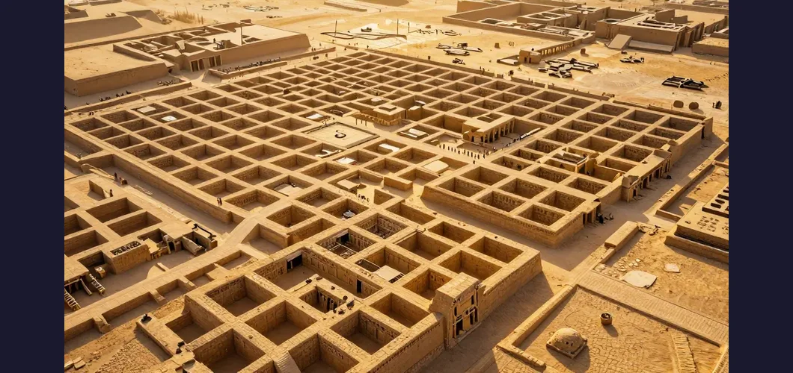

Indus Valley Civilization: Cities Before Their Time

Picture a city beside the Indus River, more than 4,000 years ago. The streets are straight. The houses are built of baked brick. Almost every home has a toilet, and covered drains carry the dirty water away. Then, over a few hundred years, the people leave. Sand and mud bury the city, and the world forgets it.
This was the Indus Valley Civilization. It grew up between about 3300 and 1300 BCE, on the rich flat land beside the Indus River and its side rivers. Today that land is in Pakistan and western India. The civilization rose in a way we do not fully understand. It ended in the same way.
It is also called the Harappan Civilization, after Harappa, the first of its cities to be dug up. It was one of the three places where city life first began. The other two were ancient Egypt and Mesopotamia.
Its best years were from about 2500 to 1900 BCE. At that time it covered an estimated 1.25 million square kilometers. That is more land than ancient Egypt and Mesopotamia together. Between one and five million people lived there.
Its cities included Mohenjo-daro, Harappa, Lothal, Dholavira, and Rakhigarhi. They had streets laid out in a grid, bricks of a standard size, good drains, and indoor toilets. City builders would not offer such comforts again for thousands of years.
The Harappans had a writing system, and nobody can read it to this day. They traded widely with Mesopotamia and the Persian Gulf. They also seem to have lived in peace. There is no sign of standing armies, major weapons, or large wars.
Then, between about 1900 and 1300 BCE, the civilization broke apart and faded. People left the cities. Writing stopped. Trade collapsed. The great cities of the Indus fell silent under mud and sand. Nobody found them again until the 1920s.
It reached from the foothills of the Himalayas in the north to the coast of the Arabian Sea in the south. In the west it reached the border of Iran. In the east it reached the Ganges-Yamuna doab, the land between those two rivers.
More than 1,056 settlements have been found. New ones turn up regularly, through surveys on the ground and pictures taken from satellites.
Experts divide its history into three parts. The Early Harappan period lasted from about 3300 to 2600 BCE. The Mature Harappan period lasted from about 2600 to 1900 BCE. The Late Harappan period lasted from about 1900 to 1300 BCE.
The civilization was at its height in the Mature period. All its major cities were doing well at the same time. No other society of that age managed its cities so well together.
Egypt had its pharaohs, and Mesopotamia had its kings. The Indus Valley left no palaces, no royal tombs, and no giant statues of rulers. There is no clear sign of one central government.
So some scholars have a bold idea. Perhaps the Harappans lived as equals, with no small group far above the rest. If that is true, they were one of the most successful societies of equals that ever built cities.
The first thing a visitor notices is how well the cities were planned. Mohenjo-daro and Harappa were built on a grid, like a sheet of squared paper. In the West, this plan did not become standard until the Roman Empire, nearly two thousand years later.
The streets met at right angles. The main roads ran north to south and east to west, and they made tidy blocks of houses. The buildings were made of baked bricks that all had the same shape. The usual ratio was 1:2:4. That means each brick was twice as wide as it was thick, and four times as long. Such sameness suggests central rules for making bricks, far ahead of their time.
Mohenjo-daro is the site that has been dug up the most. It covered about 300 hectares. At its peak, 40,000 to 60,000 people may have lived there.
The city had two parts. In the west was a raised mound called the citadel. It held large public buildings and perhaps offices for the people who ran the city. In the east was the lower city, with homes, workshops, and markets.
The most surprising part of a Harappan city was its system for keeping clean. Nearly every house in Mohenjo-daro and Harappa had an indoor toilet. The toilets were joined to covered drains that ran under the streets.
The dirty water flowed through drains lined with brick. The drains had covers that could be lifted for checking. They emptied into bigger city sewers. Nothing like this was seen again until modern times. In the cities of medieval Europe, people emptied their chamber pots into the street.
The Harappans were also clever with water. The city of Dholavira stood on an island in the Rann of Kutch, in Gujarat. It had a remarkable system of reservoirs, dams, and channels. These caught rainwater and stored it. That was vital in a dry land where the monsoon, the yearly season of rain, could not be trusted.
At Lothal, near the Gulf of Khambhat, archaeologists found a basin lined with brick. A channel joined it to the sea. Ships could be loaded and unloaded there at high tide. Many experts regard it as the oldest known dock in the world.
One of the best-known Harappan buildings is the Great Bath of Mohenjo-daro. It is a large tank in the shape of a rectangle, on the citadel mound. It is about 12 meters long, 7 meters wide, and 2.4 meters deep.
The builders made the tank watertight. They put a lining of bitumen, a kind of natural tar, and gypsum mortar between two layers of tightly fitted baked bricks. The method worked very well. The tank is said to hold water even today, more than 4,500 years after it was built.
Around the Great Bath were corridors, covered porches, and rooms. This suggests that it was used by the public or for religion. Archaeologists believe people may have washed there to make themselves pure. That custom later became central to the Hindu religion.
The Great Bath was found in the 1920s, in the early digs at Mohenjo-daro. It is still one of the most famous buildings of the ancient world.
Of all the puzzles of the Indus Valley, the writing is the most tempting. The Harappans left thousands of short texts on seals, tablets, pottery, and metal objects. Their script has more than 400 different signs.
The script usually runs from right to left. A few texts are boustrophedon, which means the lines change direction, first one way and then the other.
Most texts are very short. The usual one has only five or six signs. The longest known has just 26. This is a major obstacle for anyone who wants to read the script. With no long texts, language experts have few patterns to study.
Scholars have worked hard on the script since the 1920s. Many have claimed to read it. They have linked it to Dravidian languages, Indo-Aryan languages, Sumerian, and even various very early languages. None of these claims has been widely accepted.
The Indus script is still one of the most important unread writing systems in the world. Others are Linear A of the Minoans and the Rongorongo script of Easter Island.
Because we cannot read the script, we know far less than we would like. We do not know what the people called themselves or what language they spoke. We do not know how they were ruled or what they believed.
The script appears mostly on seals. These are small square tablets of steatite, a soft stone. Most have a picture of an animal and one line of text. They were clearly used for trade and record keeping. Identical seals have been found at sites hundreds of kilometers apart.
The animals on the seals include bulls, elephants, and tigers. There is also a strange “unicorn” animal, which appears on more seals than any other creature.
One famous seal shows a figure sitting with crossed legs, with animals all around. The pose looks like later yoga meditation. Some scholars think it is linked to later Hindu religious pictures. But we cannot read the words beside it. So these ideas are interesting guesses that nobody can prove.
In recent years, computer scientists have tried their luck. They have used machine learning, statistics, and programs that look for patterns. They hope to do what human scholars could not.
A much-discussed study came out in 2009. Its authors were researchers at the University of Washington and the Tata Institute. They used statistics to argue that the script probably records a spoken language and not just a set of symbols.
Other researchers have used AI to study the order of the signs. They found signs of steady grammar. But the basic problem is the same. The texts are too short. And there is no text in two languages to act as a key, no “Rosetta Stone” for the Indus script.
Until someone finds such a text, the script will probably stay a mystery. The history, the stories, and the very name of this people are locked behind a wall of symbols.
Perhaps the most surprising thing about the Indus Valley is the lack of war. In Egypt and Mesopotamia, artists of the same age made many pictures of battles, conquests, and warrior kings. The Harappans left no known pictures of armies, battles, or campaigns.
No large stores of weapons have been found. No city walls seem to have been designed to keep out human attackers. No royal tombs full of weapons and armor have turned up. The cities show no signs of violent destruction.
Two small works of art tell us a little about these people. The first is the “priest-king,” a famous soapstone figure found at Mohenjo-daro. It shows a bearded man with a shawl and a headband. It suggests that some kind of leader existed. But nothing shows that he ruled by military force.
The second is the “dancing girl,” a small and graceful bronze figure of a young woman. Bangles cover her left arm. She was made around 2500 BCE by the lost wax process, a way of casting metal in a mold shaped with wax. She speaks of a society that valued art and skill.
Scholars argue fiercely about this peaceful picture. Some archaeologists say the missing evidence means exactly what it seems to mean. The Harappans really were peaceful and worked together. They ran their vast land through trade and shared customs, and perhaps through some kind of council.
Others give a warning. Not finding something does not prove it was never there. The Harappans may have had soldiers whose traces have not survived, or have not been recognized.
One thing is clear. This was a vast and well-ordered society of cities, spread over more than a million square kilometers. It did well for centuries. And it did so without the visible military power of nearly every other ancient civilization.
The most haunting question is also the simplest. What happened to them? Around 1900 BCE, the Mature Harappan period began to give way to the Late Harappan period. People slowly left the cities. The standard bricks were no longer made. Writing disappeared.
Trade with Mesopotamia and the Persian Gulf shrank and then collapsed. The people moved away to the east and the south. By about 1300 BCE, the age of cities was over.
Other ancient societies fell suddenly. The Indus Valley seems to have faded slowly, over several centuries. But slow does not mean well understood.
The answer most experts accept is a change in climate. A key study appeared in 2016 in the journal Geology. Its authors looked at the layers of mud from an ancient lake near Mohenjo-daro. The summer monsoon had brought steady rain to the Indus region for thousands of years. The mud showed that it grew much weaker around 2000 to 1900 BCE.
Less rain would have ruined the farms. It would have dried up the rivers that kept the cities alive. Life in cities would have become impossible.
Evidence from the land supports this theory. The Ghaggar-Hakra River dried up around this time. Many people identify it with the Saraswati, a legendary river in the old Vedic texts of India. The cause may have been movements in the Earth’s crust that sent its side rivers another way. Many Harappan sites stood along the Ghaggar-Hakra. When it dried up, great numbers of people had to move.
There was once another leading theory, that people called Aryans invaded. Most experts have now given it up. Digs at Indus sites show no signs of violent destruction.
In 2019, scientists studied DNA from remains at Rakhigarhi, one of the largest Harappan sites. DNA is the code inside every living cell. They found an unbroken link between the Harappans and the people of South Asia today.
So no new people came and took the place of the old. The culture changed slowly. The children of the Harappans did not vanish. They adapted, moved, and grew into the cultures that followed.
The Indus Valley Civilization is the most impressive of the great ancient city societies. It is also the hardest to understand. It was larger than Egypt and Mesopotamia together. Its cities were planned with a skill that nobody matched for thousands of years. Its drains were better than those of many European cities in the 19th century.
Its people traded across the known world. They seem to have lived in peace. They made a script that we still cannot read. Then, over several centuries, it all faded away. There was no great battle and no terrible volcano. There was a slow, quiet retreat as the rains weakened, the rivers dried, and the people scattered.
The Harappans did not truly disappear. They live on in the genes and the customs of South Asia. But their cities, their script, and their name were lost for more than 3,000 years, buried under the mud of the Indus.
In many ways the Harappans built a world ahead of its time. Perhaps the greatest mystery is not that they vanished. It is that they did so much, so long ago, and were then forgotten. Who were they, and what did they write?
References & Further Reading
Wikipedia: Dholavira — The Indus city with sophisticated water harvesting systems in Gujarat
Wikipedia: Lothal — Home of the world’s oldest known dock and major trade center
📚 Recommended Reading: The Indus by Andrew Robinson (on Amazon) — As an Amazon Associate, we earn from qualifying purchases.
Editorial note: Archaeological understanding of the Indus Valley Civilization continues to evolve as new excavations, DNA studies, and paleoclimate data emerge. See our Editorial Policy.